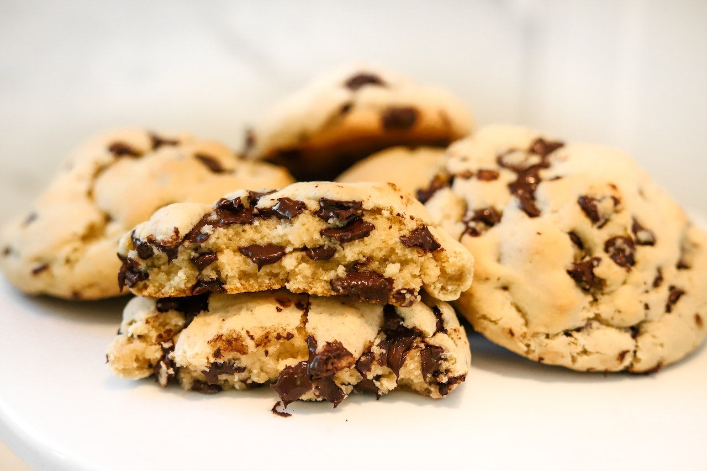

- Em uma batedeira, bata a manteiga, o açúcar branco, o açúcar mascavo e o extrato de baunilha.
- Adicione os ovos, um de cada vez, batendo bem depois de cada adição.
- Em outra tigela, misture a farinha, o sal e o fermento.
- Adicione aos poucos a mistura de farinha na batedeira, batendo bem a cada adição.
- Adicione o chocolate e misture com uma colher de pau ou espátula.
- Preaqueça o forno a 200°C e unte as formas com manteiga.
- Use uma colher de sopa como medida para os cookies.
- Distribua na forma com uma distância mínima de 4 centímetros e asse por cerca de 10 a 12 minutos.
- Espere esfriar para se deliciar. Aproveite.